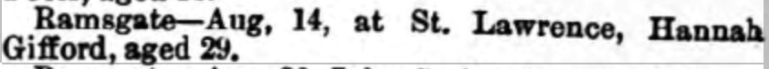
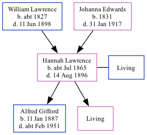

Hannah Gifford (née Lawrence) cJul 1865 - 1896
[ Home ] | [ Calendar ] | [ Surnames Index ] | [ Family History ]A laundress and the child of William Lawrence (a harbor laborer) and Johanna Edwards, Hannah Lawrence, the great-great-aunt of Nigel Horne, was born in St Lawrence, Thanet, Kent, England c. Jul 18651, was baptized there on Oct 8, 1865 and married Alfred Gifford (a milkman with whom she had 2 children: Alfred Daniel and Lily Ethel, along with 1 surviving child) in Thanet, Kent, England in Oct/nov/dec 18843.
Throughout her life, she lived at Rear of Southwood Lodge, St Lawrence in Thanet on Apr 2, 18716; and on Southwood Road, St Lawrence in Thanet on Apr 5, 18917.
She died on Aug 14, 1896 in St Lawrence2 and was buried there on Aug 18, 18964,5.
Parents
- William was born c. 1827
- Johanna Brooker was born in 1831
Children
- Alfred Daniel was born on Jan 11, 1887
Citations
- 1871 England Census Online publication - Provo, UT, USA: The Generations Network, Inc., 2004.Original data - Census Returns of England and Wales, 1871. Kew, Surrey, England: The National Archives of the UK (TNA): Public Record Office (PRO), 1871. Data imaged from the National
- England & Wales deaths 1837-2007 - Findmypast
- England & Wales Marriages 1837-2005 - Findmypast
- Kent, Canterbury Archdeaconry burials 1538-1988 - Findmypast
- England Deaths & Burials 1538-1991 - Findmypast
- 1871 England, Wales & Scotland Census - Findmypast (was age 5 and the daughter of the head of the household)
- 1891 England, Wales & Scotland Census - Findmypast (was age 27 and the wife of the head of the household)
Media
Thanet Advertiser - 22 Aug 1896

England & Wales births 1837-2006 - BMD/B/1865/3/AZ/000781/007
England & Wales marriages 1837-2008 - BMD/M/1884/4/AZ/000193/235
England & Wales deaths 1837-2007 - BMD/D/1896/3/AZ/000127/170
Kent, Canterbury Archdeaconry burials 1538-1988 - GBPRS/CANT/D/95281141
1891 England, Wales & Scotland Census - GBC/1891/0005906989
England Deaths & Burials 1538-1991 - R_277117232
Family Tree
Generated by Ged2Site. Last updated on Jul 20, 2025